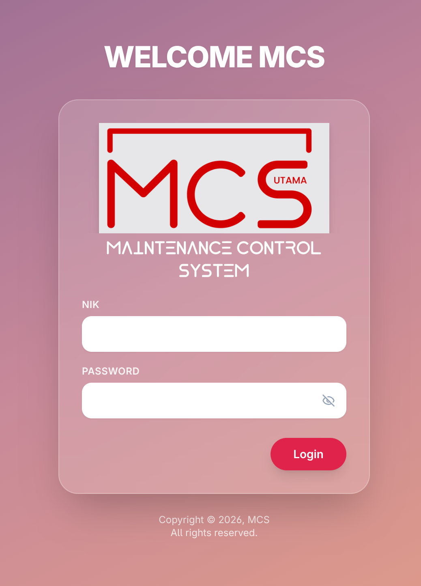
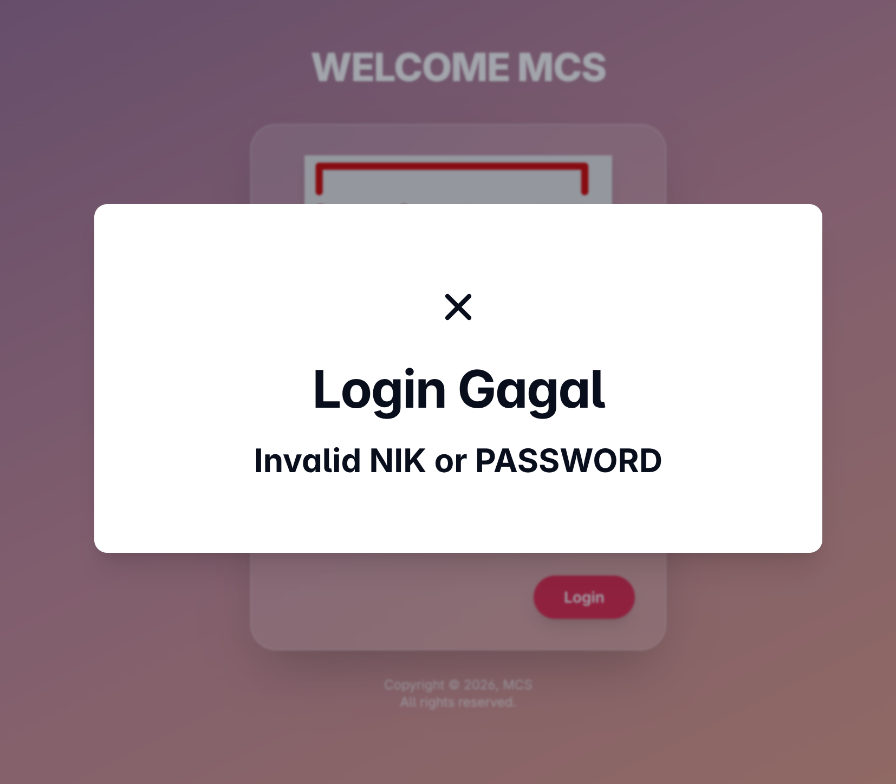
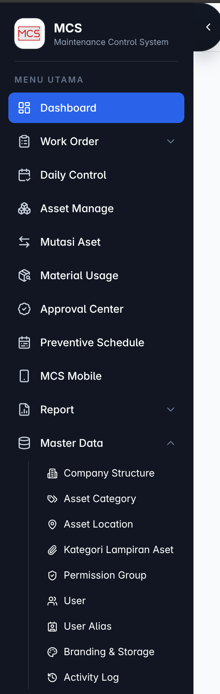
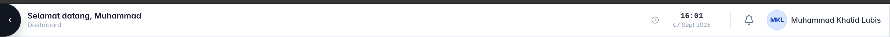
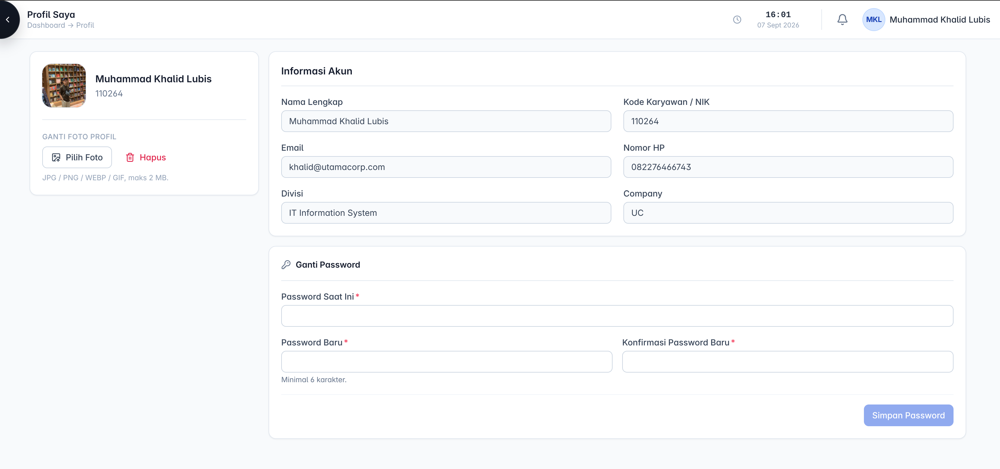

Panduan ringkas tampilan Login, Sidebar, Navbar, Profile Page, dan standar font untuk Maintenance Control System.
Border standar: #DCE5F1. Teks utama: #172033. Teks sekunder: #667892.





tb_user.Konfigurasi utama: Inter → ui-sans-serif → system-ui → -apple-system → BlinkMacSystemFont → Segoe UI → Roboto → Helvetica Neue → Arial → sans-serif.
Hanya satu font yang dirender. Browser memilih font pertama yang tersedia: Inter bila terpasang; Windows umumnya Segoe UI bila Inter tidak ada; Android biasanya Roboto; Apple memakai system font/Helvetica Neue; Arial adalah cadangan terakhir.
Teks Maintenance Control System di bawah logo login memakai font lokal custom UtamaFont-Regular.ttf melalui Next.js localFont. Font ini khusus elemen branding, bukan font global sistem.